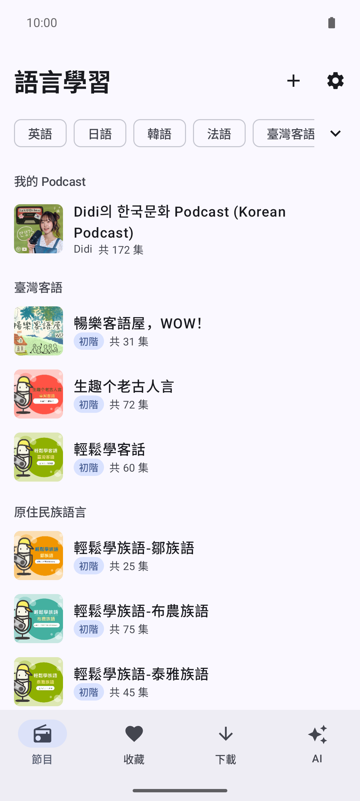
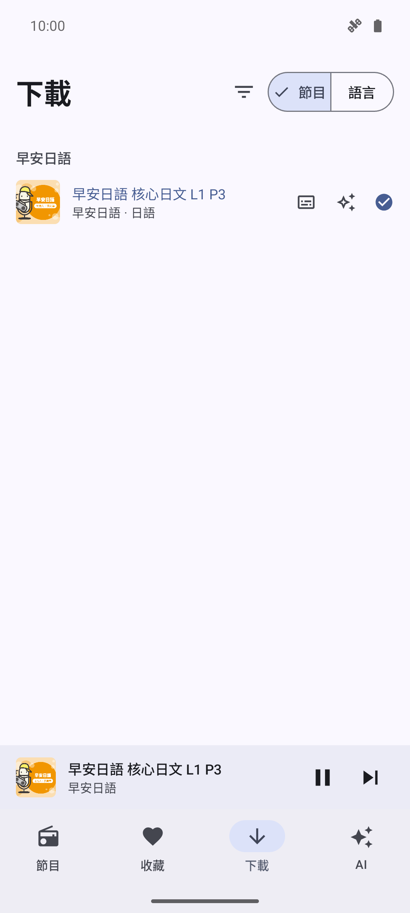
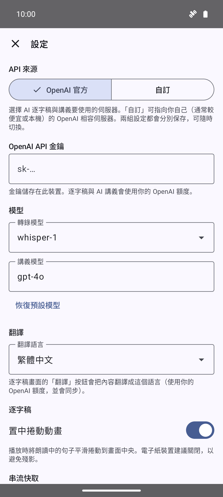
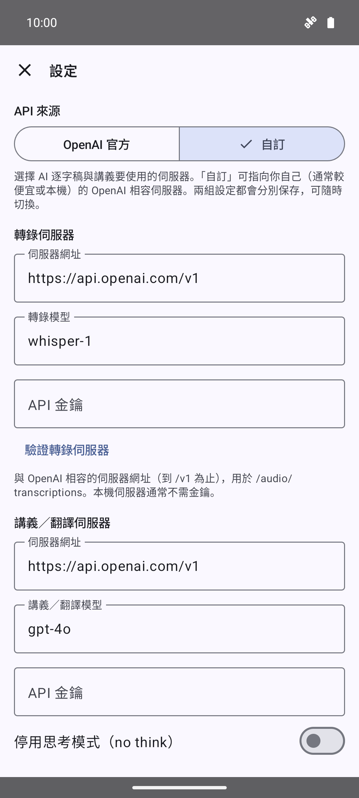
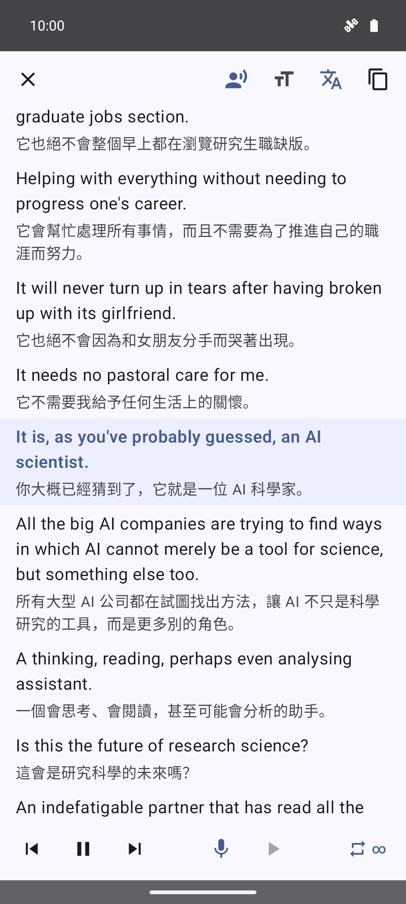

Overview
NerLan is a listening-first language study app. It streams the language-learning courses of Taiwan's National Education Radio (國立教育廣播電臺, "NER") — Japanese, Korean, English, French, and many more — and any podcast you add. On top of ordinary playback it layers study tools: AI-generated transcripts that follow the audio sentence by sentence, review handouts, line-by-line translation, and shadowing practice with your own voice recordings.
The interface is in Traditional Chinese, matching the courses' teaching language. This guide gives every label in the app alongside an English explanation.
To start: open the 節目 (Programs) tab, pick a language chip, open a course, and tap an episode. Everything else — downloading, transcripts, handouts — is one more tap from there.
The four tabs
| Tab | What it holds |
|---|---|
| 節目 (Programs) | The NER course catalog and your podcasts, with language filters, plus the settings gear. |
| 收藏 (Favorites) | Programs and episodes you've hearted, grouped by show. |
| 下載 (Downloads) | Episodes stored offline — explicit downloads and auto-cached streams. |
| AI | Every episode that has a generated transcript or handout — your study library. |
A mini player floats above the tabs whenever something is loaded: tap its cover or title to open the full player. Tabs keep their state — filters, scroll position, and open program pages survive switching away and back.
On large screens (tablets, desktop windows) the layout becomes two-pane: the browser shrinks to a left column and study material — transcript, handout, or PDF — fills the right side automatically while you listen.
Browsing programs
The 節目 tab lists the whole NER catalog, grouped by language. A row of filter chips sits at the top; the most-studied languages (英語, 日語, 韓語, 法語) come first, and the chevron (展開語言) expands the row to show every language. Your chosen filter is remembered across launches; 全部 shows everything.
Each program row shows its cover, name, level (e.g. 初階), and episode count (共 N 集). Tap one to open its page:
- The heart in the top bar (收藏節目) favorites the whole program — it then appears in 收藏 and in the 我的節目 widget.
- The introduction is clamped to three lines; tap it to expand.
- 單集列表 is the episode archive, oldest first, loading more as you scroll. Loaded pages are cached, so reopening the program is instant.
- Each episode row has a heart (收藏) and a download button (下載); tapping the row plays it with the rest of the list queued. Pull down to refresh.
The catalog itself is served from an on-disk cache, so browsing works offline and the app opens instantly; pull down to fetch fresh listings.
Adding podcasts

The ＋ button in the 節目 tab header opens 新增 Podcast. Paste either an Apple Podcasts link (podcasts.apple.com or an apple.co short link) or a raw RSS feed URL — the dialog offers a shortcut, 到 Apple Podcasts 搜尋節目, to search shows in your browser and copy the link back.
Subscribed shows appear under 我的 Podcast at the top of the 節目 tab (when no language filter is active). Long-press a podcast row to 取消訂閱 (unsubscribe). Podcast episode pages work like course pages: pull to refresh for new episodes, hearts, and downloads.
The player
Tap the mini player to open the full player sheet.
- Transport: 上一集 · 倒退15秒 · 播放/暫停 · 快轉15秒 · 下一集. The scrubber shows elapsed and total time.
- Repeat cycles through 不重複 (off) → repeat queue → repeat one; speed offers 0.5×–2×. Both are remembered across launches.
- 收藏 hearts the episode; the download control shows 下載, a progress ring, or 已下載.
- When an episode has PDF attachments, a 講義 button opens them (see PDF handouts).
- Once AI is configured, an extra row appears: 字幕 (in-player synced captions), 跟讀 (shadowing), 逐字稿 (transcript), and AI 講義 (handout).
Playback continues in the background with a media notification and lock-screen controls, pauses when headphones unplug, and holds a wake lock so screen-off streaming doesn't stall. Every episode remembers its position and resumes where you left off; finishing an episode clears the resume point so a re-listen starts fresh.
Downloads & streaming cache

Tapping 下載 on any episode saves its audio for offline listening — and automatically saves the episode's PDF handouts along with it. Up to three downloads run at once; progress shows as a ring on the row.
Separately, 串流快取 (streaming cache, off by default — see Settings) keeps the bytes you stream: an episode played to the end becomes fully cached and playable offline, capped at 2 GB with least-recently-used eviction.
The 下載 tab shows both kinds side by side, sorted in course order:
- A filled check badge = 已下載 (explicit download); an outlined, dimmed check = 快取 (cache capture). The fill — not just the color — tells them apart, so it reads on e-ink screens too.
- The filter icon (篩選) narrows to 全部 / 已下載 / 快取; the segmented control groups by 節目 (program) or 語言 (language).
- Swipe a row right-to-left to delete the local audio. Long-press to edit its note.
Setting up AI
Transcripts, handouts, and translations need a speech-to-text and a chat model. Open settings (the gear in 節目) — the API 來源 section picks where those requests go, with two independently saved configurations:
OpenAI 官方 (official)

- OpenAI API 金鑰 — your key, stored on the device. Generation uses your own OpenAI credit.
- 轉錄模型 (transcription model) — whisper-1 (returns timestamps for synced captions), gpt-4o-mini-transcribe, or gpt-4o-transcribe.
- 講義模型 (handout model) — free text, default
gpt-4o; used for handouts, translation, and sentence segmentation. 恢復預設模型 restores both defaults.
自訂 (custom server)

Point the AI features at any OpenAI-compatible server — typically cheaper, or running on your own machine (whisperASR, Ollama, a proxy). Two endpoints are configured separately:
- 轉錄伺服器 — server URL (up to
/v1), transcription model, and an optional API key. Used for/audio/transcriptions. - 講義／翻譯伺服器 — server URL, chat model, optional key, and a 停用思考模式（no think） switch that sends
reasoning_effort=noneso local thinking models (qwen3, deepseek-r1, …) skip their reasoning dump. Used for handouts, translation, and sentence cleanup. - Each block has a verify row — 驗證轉錄伺服器 / 驗證講義／翻譯伺服器 — that sends a real test request and shows a check on success or the server's own error message on failure.
Transcripts (逐字稿)
The 逐字稿 button — in the player or on episode rows — transcribes the episode into clean, punctuated sentences, one per line. An outlined icon means not generated yet; tapping starts the job and opens the result when it's ready. A filled icon opens the saved transcript instantly. Long-press for 重新產生 (regenerate) or 刪除逐字稿 (delete).
Long episodes are transcribed in ~20-minute chunks; the viewer opens as soon as the first chunk is ready and fills in the rest, showing progress like 轉錄中…（1/3）. Jobs keep running if you close the player.
In the transcript viewer:
- With a timestamped model (whisper-1), the sentence being spoken is highlighted and kept centred as the audio plays. Tap 字幕 in the player to show the same synced view in place of the cover art.
- 字體大小 cycles three reading sizes; 複製全部 copies the whole text; the screen stays awake while a transcript is open.
- 跟讀 switches into shadowing mode (below); 翻譯 cycles translation views (below).
Translation (翻譯)
The transcript's 翻譯 button cycles three views: original → original + translation → translation only. In the bilingual view each sentence carries its translation directly underneath, so you read the original first and check yourself one line later. The first tap generates a translation into the language chosen in Settings → 翻譯語言 (default 繁體中文; also English, 日本語, 한국어, Español, Français, Deutsch, Tiếng Việt, Bahasa Indonesia, ภาษาไทย). Translations stream in batch by batch, are cached, and sync with your study material.
Opening a transcript never silently starts a paid translation — a remembered bilingual view is only restored when the translation is already cached.
Shadowing (跟讀)

Shadowing turns a transcript into speaking practice. Enter it from the player's 跟讀 button (available for the playing episode when its transcript has timestamps). The practice bar sits at the bottom of the transcript, and translation view keeps working, so you can shadow with meanings in sight.
- The current sentence loops; tap any sentence to jump the loop there.
- Controls: 上一句 / 下一句 (previous/next sentence), 重複這句 / 停止重複 (loop toggle), 錄音 / 停止錄音 (record), 播放我的錄音 (play my recording), and a repeat-count button — ×1 / ×2 / ×3 / ×5 / ∞.
- With a finite count, the loop plays that many times and then automatically starts recording your reading; stopping plays your take back so you can compare against the original.
- One recording is kept per sentence; a new attempt overwrites it. Recordings stay on the device.
AI handouts (AI 講義)
The AI 講義 button builds a review sheet from the episode's transcript (generating the transcript first if needed). Every handout has four sections in Traditional Chinese: 內容說明 (what the episode covers), 文法重點 (grammar points), 例句 (example sentences with translations), and 單字 (a vocabulary table with pronunciation and meanings). Foreign-language material keeps its original script.
Episodes longer than ~15 minutes are split into Part I / II / III sections. The handout renders in a zoomable view matching the light/dark theme; long-press its button to regenerate or delete.
PDF handouts (講義)
Some NER episodes come with official PDF handouts. Those episodes show a 講義 button (an ⓘ icon) — outlined if the PDF hasn't been saved yet, filled once it's offline. It opens a full-screen reader that keeps the audio playing; episodes with several attachments get a 選擇附件 switcher. PDFs download automatically alongside the episode's audio.
The AI library
The AI tab lists every episode that has a transcript or handout, grouped by 節目 or 語言 — your generated study material in one place, in course order. Content here opens even with no AI configured, so material generated earlier (or synced from another device) is always readable.
Favorites & episode notes
Hearts work on two levels: episodes (heart on any row or in the player) and whole programs (heart on the program page). Both collect in the 收藏 tab; swipe an episode right-to-left there to remove it.
Notes: NER episode titles are often just "EP12", so you can attach a note to any episode — long-press a row anywhere (or swipe right-to-left in a program's episode list) to open the editor. The note appears as an extra line under the episode title in every list, and syncs with your other study material.
Home-screen widgets
Four resizable widgets keep practice one tap away; their layouts adapt to the size you give them.
| Widget | Shows | Tap actions |
|---|---|---|
| 繼續收聽 | The playing episode with progress; larger sizes list what's next. | Transport buttons play/pause/skip; the cover opens the player. |
| 最近播放 | Shows you've been working through, with resume progress. | The play button resumes the whole course where you stopped. |
| 我的節目 | A cover grid of favorited programs and podcasts. | A cover opens that show. Configurable: pick and order exactly which shows appear, or leave it automatic. |
| 學習紀錄 | 今日學習 minutes, a daily 30-minute goal bar, 連續 N 天 streak, and this week's total. | Opens the app. |
Google Drive sync
Sign in under Settings → Google 雲端同步 and enable 同步到 Google 雲端硬碟. Your study data — favorites, episode notes, podcast subscriptions, transcripts, translations, AI handouts, and listening statistics — syncs to your Drive's private app folder and merges across devices. Audio files, PDFs, and shadowing recordings stay local. 立即同步 forces a sync; a status line shows progress and results.
Statistics
Settings → 統計 opens two screens:
- 使用統計 — total listening time, completed episodes, streak (連續聆聽天數), today/week/month totals, a 日/週/月 trend chart, and your most-listened programs. Merged across synced devices.
- 資料統計 — a storage inventory: favorites, downloads and their size, PDF attachments, cache size, AI content counts, and a per-language breakdown of downloads.
Settings reference
Opened from the gear in the 節目 tab.
Tips & extras
- E-ink devices: turn off 置中捲動動畫 for a page-jump transcript instead of a smooth scroll, and note that download/cache badges differ by fill, not color.
- Deep links: the
nerlan://scheme opens the app from anywhere —nerlan://player(the player),nerlan://show?id=…(a show's episode list),nerlan://tab?name=programs|favorites|downloads|ai(a tab). The widgets use these, and so can any automation tool. - Nothing runs unasked: AI generation only ever starts from an explicit tap, and streaming never caches unless you opted in.